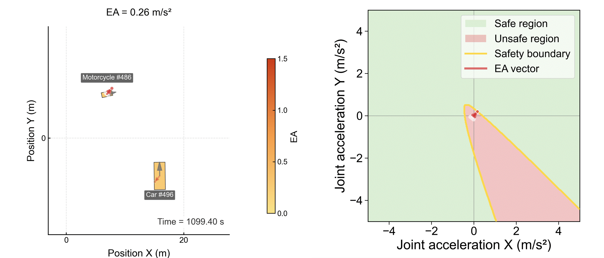
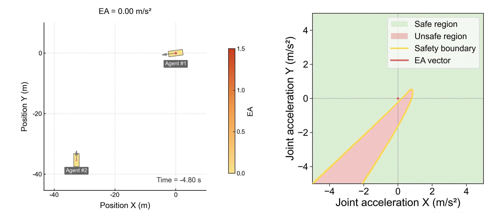
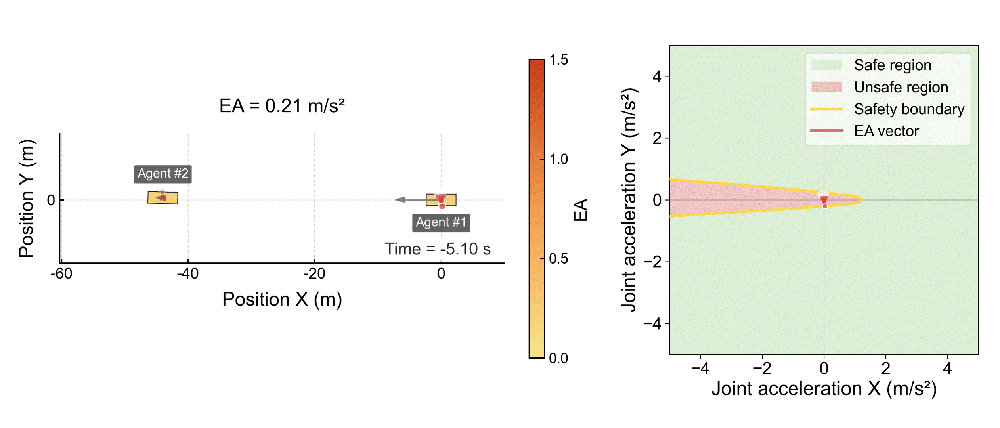
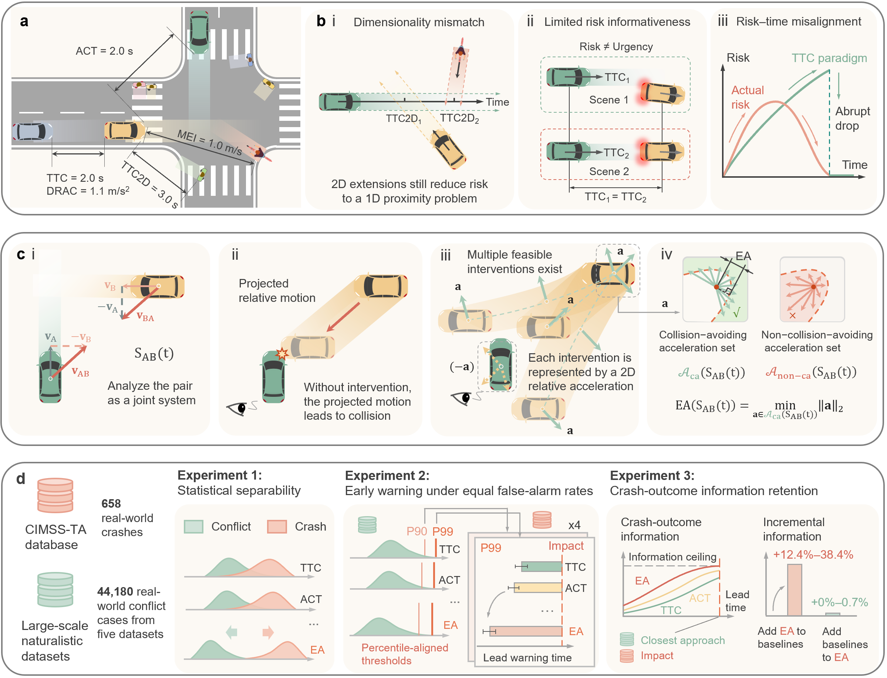
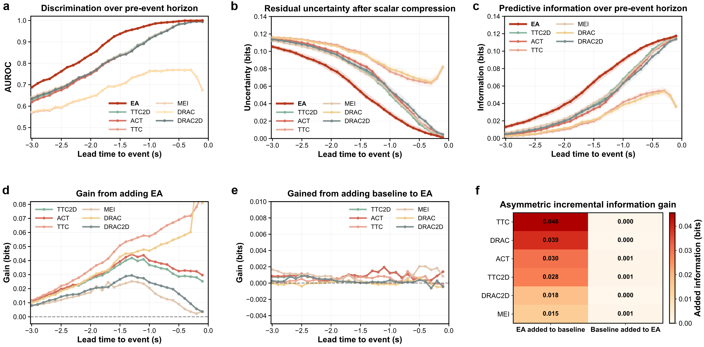

Earlier Warning
Across all tested thresholds, EA gives the earliest warning; at the 99.5th percentile threshold, warning lead times are 120-267% earlier than TTC-based methods.
Project Page
We present evasive acceleration (EA), a hyperparameter-free and physically interpretable two-dimensional paradigm for risk quantification. EA quantifies the minimum instantaneous evasive cost, defined as the minimum constant relative acceleration magnitude needed to keep the future interaction collision-free.
Across all tested thresholds, EA gives the earliest warning; at the 99.5th percentile threshold, warning lead times are 120-267% earlier than TTC-based methods.
EA retains 54.2-241.4% more crash-outcome-relevant information than classical and recent advanced baselines.
Adding EA to existing methods contributes an additional 12.4-38.4% information ceiling, while adding existing methods to EA yields near-zero gain, with asymmetry ratios up to 95.5x.
Time-to-collision (TTC) has long shaped safety assessment across training, testing, and regulatory settings. However, TTC evaluates risk urgency through only a single temporal dimension, creating a dimensionality mismatch for inherently multidirectional interaction risk. This leads to limited risk informativeness (different avoidance difficulty can receive similar values) and risk-time misalignment (risk can paradoxically rise until conflict resolution and then drop abruptly). We report evasive acceleration (EA), a hyperparameter-free and physically interpretable two-dimensional paradigm that directly measures the minimum instantaneous cost of collision avoidance.
Using 44,180 naturalistic interactions from five open datasets across three countries and 658 reconstructed real-world crashes, EA outperforms evaluated baselines in warning timeliness, crash discrimination, and crash-outcome information retention. We further provide an efficient implementation with an average single-frame computation time of 5 ms for scalable deployment.
Unlike methods that quantify risk along a predefined direction, EA evaluates all possible directions of relative collision avoidance and keeps the least costly one.
EA captures continuous risk evolution from escalation to dissipation after evasive action, avoiding the abrupt and misleading trend behavior often seen in TTC-style metrics.
EA is hyperparameter-free, physically interpretable, and computationally efficient, with about 5 ms average single-frame runtime.





This figure explains why we introduce EA and what problem it solves. It first shows the limitation of TTC-style thinking: traffic risk is fundamentally two-dimensional, but many existing methods still compress it into a one-dimensional quantity.
It then illustrates the core idea of EA. Instead of asking only how much time is left, EA asks how much two-dimensional evasive acceleration is required right now to make the future interaction safe. The last part summarizes the validation setting and the three main experiments used in the paper.
This figure quantifies warning timeliness under fixed false-alarm budgets. We use a sustained-warning rule: a warning only counts if it remains active until the last valid pre-crash moment.
Across all tested thresholds, EA provides the earliest warning overall. The advantage becomes larger as the false-alarm constraint becomes stricter, reaching 120-267% earlier warnings than TTC-based methods at the 99.5th percentile threshold.

This figure compares how much crash-outcome-relevant information is preserved in the risk values produced by different methods. All methods are evaluated at the same interaction snapshot and the same lead time.
EA shows the strongest standalone performance: it separates crash and non-crash cases better, leaves less residual uncertainty, and retains more useful information (54.2-241.4% gain over baselines). The last panels also show that adding EA to existing baselines provides substantial extra information, while adding those baselines on top of EA contributes very little, with strong asymmetry up to 95.5x.
EA is the minimum magnitude of a constant two-dimensional relative acceleration vector that keeps the future relative trajectory outside the collision set.
Validation uses 44,180 naturalistic interactions from five open datasets across Germany, China, and the United States, together with 658 reconstructed real-world crashes.
Statistical separability, warning timeliness under fixed false-alarm budgets, and crash-outcome information retention.
If you find EA useful in your research, please cite the paper and link to the released implementation.
Source code github.com/AutoChengh/evasive-acceleration
Paper arxiv.org/abs/2604.17841
Cheng H, Jiang Y, Yu W, et al. Driving risk emerges from the required two-dimensional joint evasive acceleration[J]. arXiv preprint arXiv:2604.17841, 2026.
@article{cheng2026driving,
title={Driving risk emerges from the required two-dimensional joint evasive acceleration},
author={Cheng, Hao and Jiang, Yanbo and Yu, Wenhao and Zhou, Rui and Bian, Jiang and Chen, Keyu and Liu, Zhiyuan and Huang, Heye and Zhang, Hailun and Zhang, Fang and others},
journal={arXiv preprint arXiv:2604.17841},
year={2026}
}